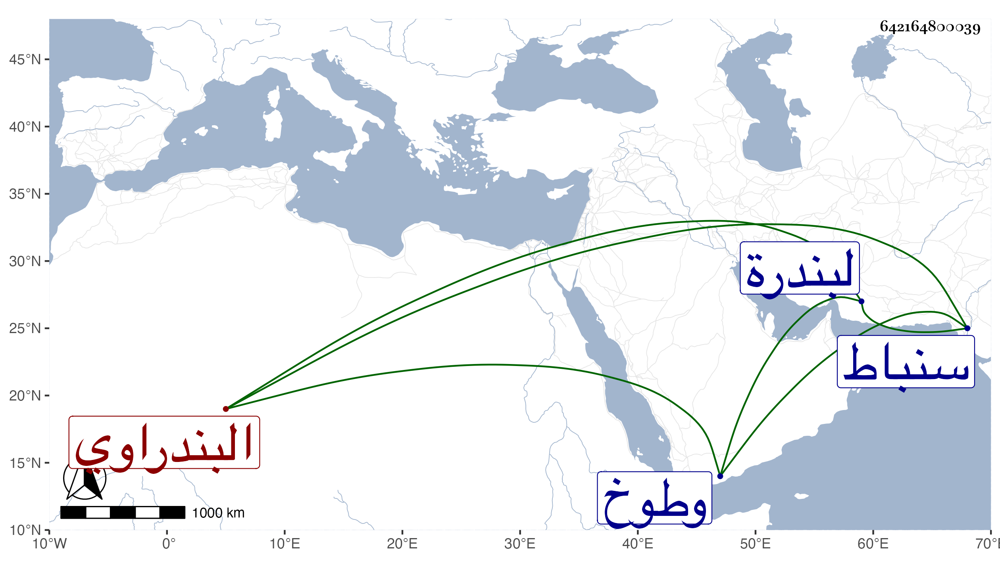

0902Sakhawi.DawLamic.ITO20230111-ara1.EIS1600.642164800039
Biography ID: 642164800039
741
مهنا بن علي بن حسين البندراوي نسبة لبندرة بين سنباط وطوخ وهي إليها أقرب ثم الأزهري الشافعي . لازم شيخنا حتى أخذ عنه جميع شرح ألفية العراقي سماعا في البحث إلا ما فاته منه فقرأ ووصفه بالشيخ الإمام الفاضل الأوحد وقال إن ذلك بحثا واستثارة للفوائد وأذن له في قراءته وإقرائه وكذا أخذه بقراءته عن الشهاب بن المحمرة وقال قراءة بحث ونظر وتأمل واستكشاف واسترشاد وقرأ على شيخنا غير ذلك وربما كان يقرأ عليه وهو قائم إجلالا للحديث وكذا أخذ عن القاياتي ورافقه في هذا كله الصندلي فإنه كان قد اختص به ولزمه في طريقته بحيث التحق به في الصلاح والخير وقال فيهما الغمري أنهما خلاصة الناس وصحب إبرهيم الأدكاوي واختلى عنده وذكر بالولاية والأحوال السنية وكان يقصد بالصدقة فيقبلها ويعطيها الفقراء بل رد هو ورفيقه المذكور ما أوصى لهما صاحبهما سليم به وهو نصف ماله إلى بناته ونفذا وصيته إلى قاعة السلاح ، ولم يلبث أن مات بعده بنحو ستة أيام في سنة إحدى وأربعين أو التي بعدها ودفن هناك رحمه الله وإيانا ونفعنا بهم .
